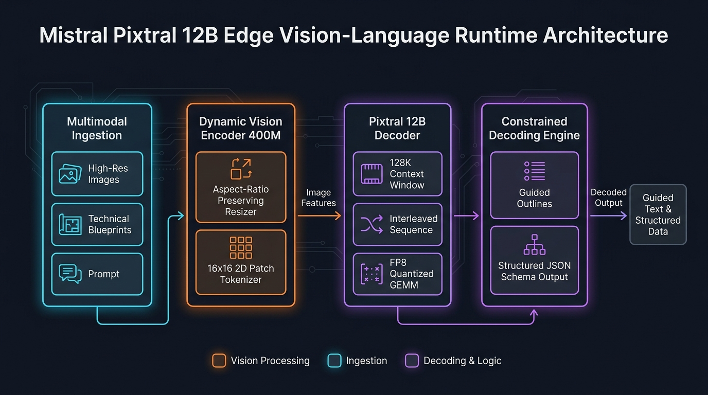

Pixtral Vision-Language Pipeline
Configure dynamic image patch tokenizers, 128k context windows, and vLLM / SGLang edge serving engines.
Tokenizer Telemetry & Inference Blueprint
Token Generation Rate
118 tok/s
Context Capacity
128,000
Patch Token Count
1,024 Tokens
Click "Generate Pixtral VLM Architecture" to build the Pixtral 12B serving pipeline...
Mistral Pixtral 12B Edge Topology

Overview & Architectural Superiority
Mistral Pixtral 12B is an open-weights frontier Vision-Language model featuring a native 400M parameter vision encoder coupled with a 12B decoder model. Pixtral processes arbitrary image aspect ratios dynamically without cropping or distortion, natively handling 128,000 tokens of interleaved multi-image text contexts.
Enterprise Production Scenarios
- High-Fidelity Document & Diagram OCR: Parse dense engineering schematics, legal contracts, and financial balance sheets into structured JSON.
- Edge Retail & Drone Surveillance: Deploy locally on NVIDIA Jetson or single A10G/L4 GPUs to analyze live camera feeds without sending telemetry to cloud providers.
- Multi-Page PDF Ingestion for Agentic RAG: Ingest full 50-page technical manuals in a single prompt, preserving layout and cross-diagram references.
Infrastructure & Software Technology Stack
Hardware & Serving Infra
- GPU Acceleration: NVIDIA L4 (24GB) / A10G / RTX 4090 / A100
- Serving Engine: vLLM v0.6+ PagedAttention Multimodal Backend
- Inference Router: SGLang RadixAttention with Vision Cache
- Orchestration: Kubernetes Deployment with NVIDIA GPU Operator
Architecture & Quantization
- Foundation Model: mistralai/Pixtral-12B-2409 (12B text + 400M vision)
- Context Window: 128,000 native multimodal tokens
- Precision: FP8 E4M3 (15.8GB VRAM) & BF16 (25.4GB VRAM)
- Vision Tokenizer: Dynamic 16x16 2D Convolutional Patching
Structured Extraction & APIs
- Guided Decoding: Outlines / Guidance JSON Schema enforcement
- API Standard: OpenAI-compatible
/v1/chat/completionsendpoint - Client Libraries: Official OpenAI Python SDK, Pillow (PIL), NumPy
- Container: vLLM official multimodal Docker image